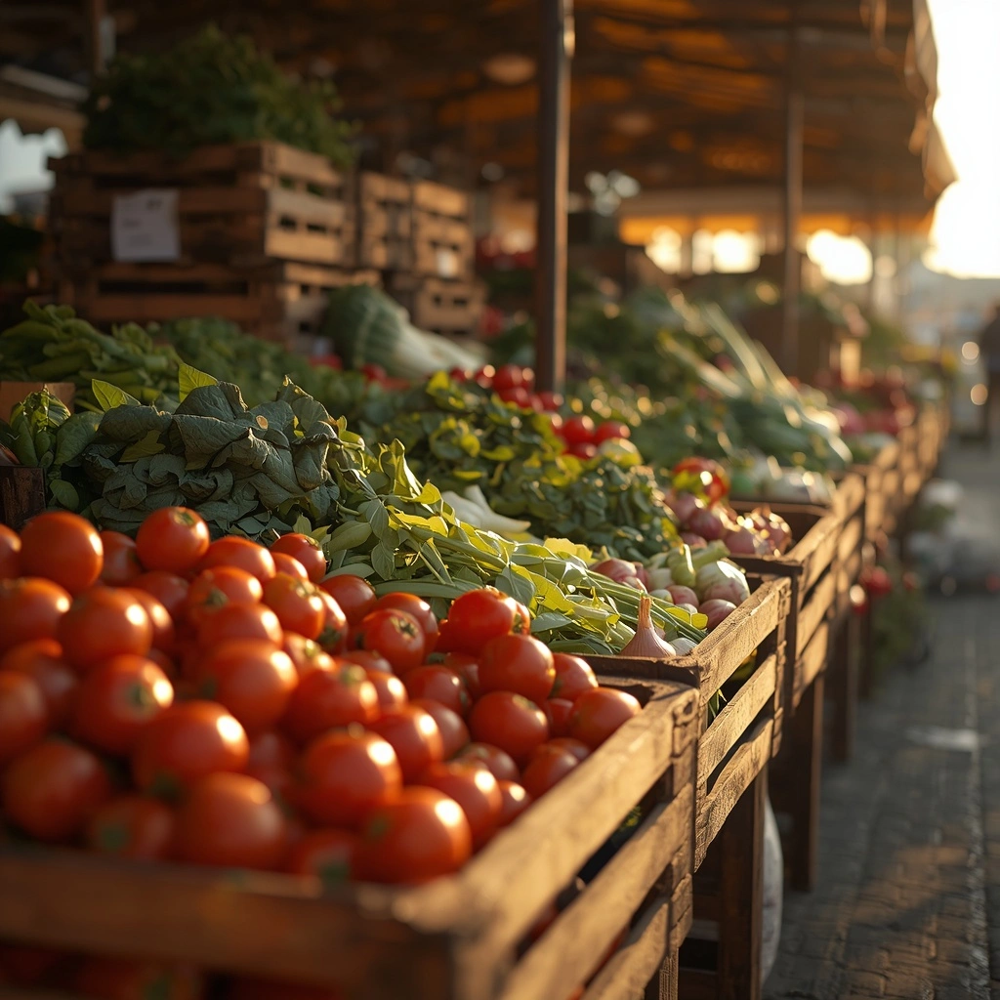
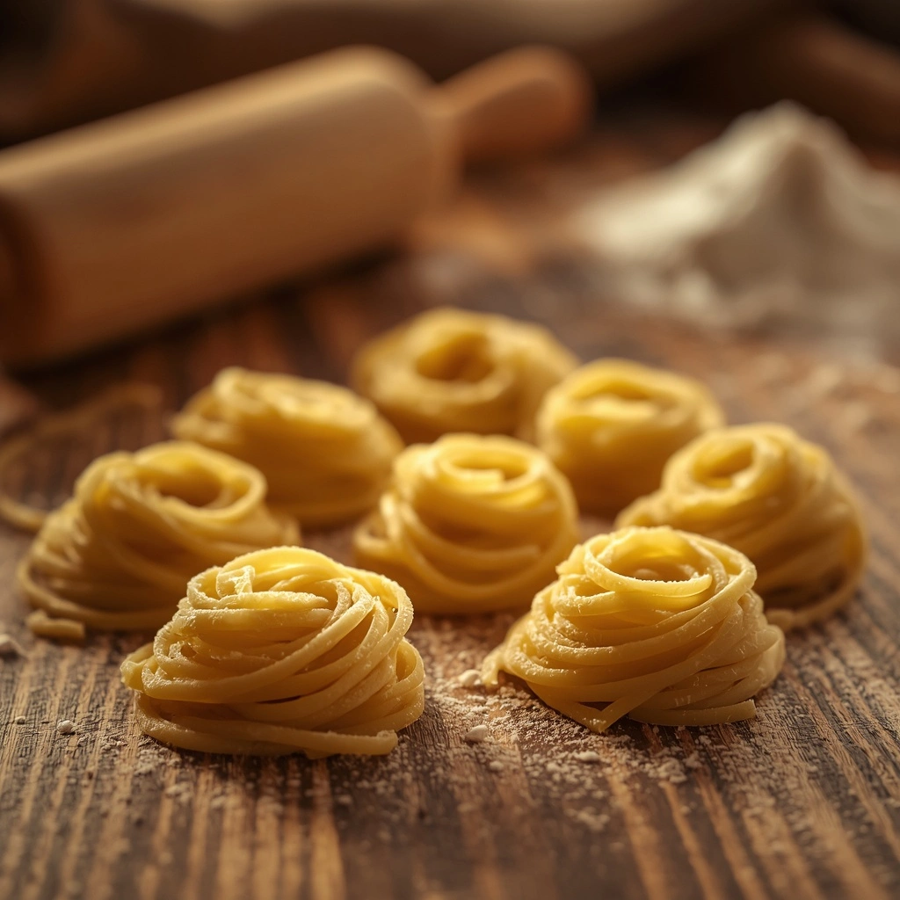
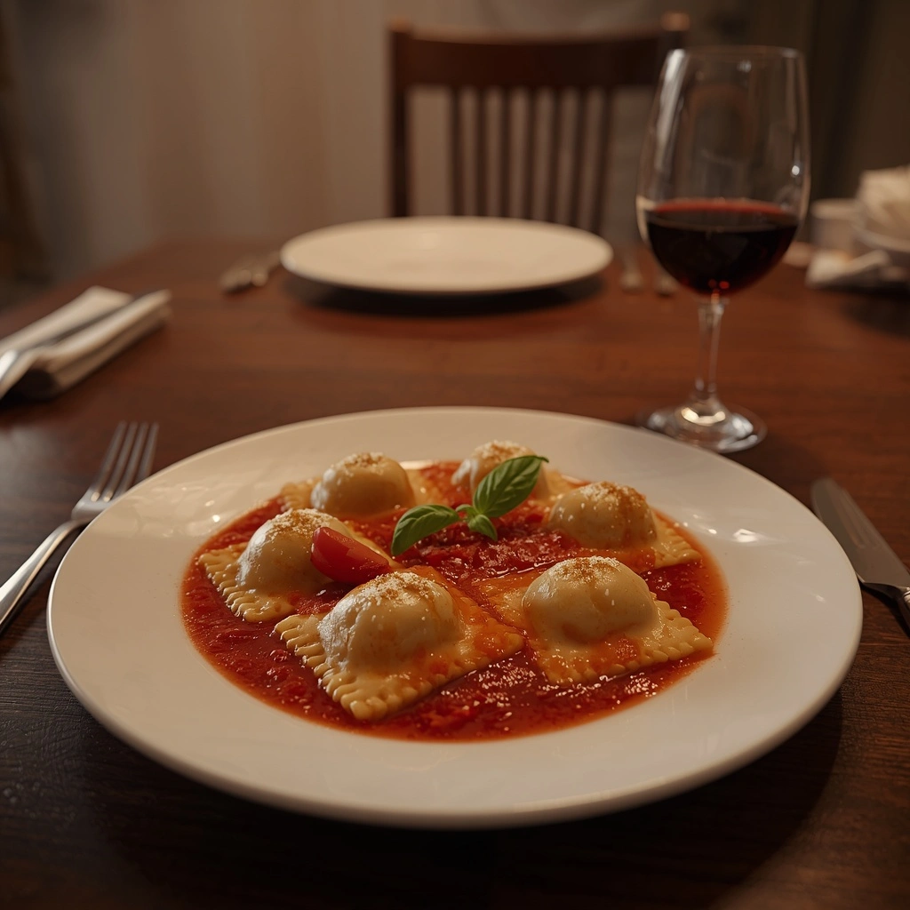

Nuestra Historia
Conocé cómo amasamos cada pasta, todos los días

Elegimos cada ingrediente a mano
Todas las mañanas vamos al mercado antes de amasar. Elegimos personalmente las verduras más frescas del día y seleccionamos la mejor carne en la carnicería de confianza. Nada llega a tu mesa por casualidad — cada relleno empieza con una elección nuestra, no con un pedido genérico.

Hechas a mano, sin conservantes
Amasamos cada sorrentino como se hacía antes: con harina, agua y tiempo, sin nada artificial. Los congelamos apenas están listos para conservar ese sabor recién hecho — vos solo tenés que hervirlos. En minutos tenés en tu mesa la misma pasta que amasamos esta mañana.

Del freezer a tu mesa, en minutos
Herví o calentá en microondas, según el producto que elijas — vos no tenés que hacer nada más. Sin descongelar, sin esperas, sin perder ese sabor recién amasado. En minutos tenés en tu mesa una pasta de calidad, rica y lista para disfrutar.